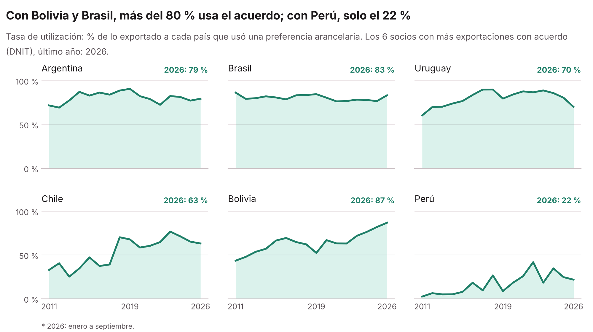

Datos abiertos · Paraguay · 2011–2026
¿Cuánto exporta e importa Paraguay usando efectivamente un acuerdo comercial? Series anuales calculadas con los despachos aduaneros públicos de la DNIT y comparadas con los certificados de origen de la VUE.
La tasa de utilización es la parte de lo exportado que usó efectivamente una preferencia de un acuerdo comercial (MERCOSUR, acuerdos del MERCOSUR con terceros países y acuerdos ALADI). Se calcula con los despachos de la DNIT: valor FOB de las exportaciones de origen paraguayo, con y sin acuerdo.
Millones de USD FOB. 2026*: enero a septiembre. Fuente: elaboración propia con datos abiertos de la DNIT.
En los socios del MERCOSUR y en Bolivia, casi todo lo exportado usa la preferencia. Con Chile la utilización se duplicó desde 2011, y con Perú sigue siendo baja.

% de lo exportado a cada país que usó una preferencia. Los datos de todos los socios están en las descargas. Fuente: elaboración propia con datos abiertos de la DNIT.
| Con acuerdo | Sin acuerdo | Total | % con acuerdo | |
|---|---|---|---|---|
| Exportaciones (FOB) | USD 5.299 M | USD 3.578 M | USD 8.877 M | 59,7 % |
| Importaciones (CIF) | USD 3.732 M | USD 9.110 M | USD 12.842 M | 29,1 % |
Las importaciones se valoran CIF (incluye flete y seguro) y las exportaciones FOB. El código calcula cualquier año desde 1997.
Las exportaciones de Paraguay se pueden medir con cuatro fuentes públicas. Sin la electricidad (que no pasa por la aduana), los despachos de la DNIT quedan entre el 94 % y el 101 % del total oficial del BCP en todos los años, y lo que los demás países declaran haber comprado a Paraguay (datos espejo) entre el 94 % y el 106 %. La VUE se aparta en 2022 y, desde 2023, cubre menos.
Millones de USD, sin electricidad. DNIT, VUE y BCP en FOB; el espejo en CIF (incluye flete y seguro hasta el comprador). 2026*: enero a septiembre; el espejo de 2026 todavía no existe. En 2022 los archivos de la VUE tienen valores atípicos (octubre y noviembre, partidas 6406 y 3904). Fuentes: DNIT; VUE (origen de los datos: Ministerio de Industria y Comercio); BCP (SICEX); UN Comtrade. Elaboración propia.
Los resultados de esta página y las fuentes originales, libres para usar. Si los usa, cite las fuentes (ver las notas de cada archivo).
Tasa de utilización por año y por país socio, y exportaciones por país según la DNIT, la VUE y el BCP, 2011–2026, con notas.
Las mismas tablas en texto, para Python, R, Stata o cualquier programa.
Exportaciones por mes, código NCM y país, 2011–2026, tal como las exporta el SICEX del Banco Central del Paraguay.
Archivos mensuales 2011–2026 de la Ventanilla Única de Exportación. Origen de los datos: Ministerio de Industria y Comercio.
Copia de respaldo de los archivos mensuales "Nivel Item" de los datos abiertos de aduanas, un año por versión.
Usa solo datos públicos. Cualquier persona puede repetir los cálculos y obtener las mismas cifras.
Cada decisión (qué regímenes se cuentan, cómo se agrupan los acuerdos, qué se excluye) está escrita en el glosario y en archivos de configuración que se cambian sin programar.
El reporte incluye una hoja de control con todo lo excluido. El código está en Python y en R, con resultados idénticos.
Cada mes nuevo que publica la DNIT se agrega con un comando. Se pueden elegir años, meses y columnas.
Sirve para reportes de comercio, para investigaciones sobre el uso de las preferencias arancelarias y para validar o complementar otras bases de comercio exterior.
Necesita Python 3.10 o superior (o R 4.x). Desde la carpeta del repositorio:
pip install -r python/requirements.txt
python python/descargar_dnit.py --anios 2021
python python/procesar_despachos.py --anios 2021El resultado es un Excel con las hojas Totales por año, Por acuerdo, Control y Detalle. Para el cruce con los certificados de origen:
python python/cruzar_dnit_vue.py --anios 2011-2026En RStudio, abra el proyecto .Rproj y ejecute R/procesar_despachos.R. Las instrucciones completas están en el README.
El detalle de cada concepto, columna y decisión está en el glosario.
Porque la VUE registra todos los certificados de origen emitidos, también los de envíos que no usan una preferencia. Además, la VUE usa el país de destino final y la DNIT el país declarado en el despacho, y la fecha de la VUE es la de emisión del certificado, no la de cancelación del despacho.
Es la parte de lo exportado que usó efectivamente una preferencia arancelaria de un acuerdo comercial. Una tasa baja con un socio con el que hay acuerdo puede indicar que los productos no tienen preferencia, que el arancel ya es cero para todos o que cumplir las reglas de origen no conviene.
Porque el BCP suma la electricidad de Itaipú, Yacyretá y la ANDE, que no pasa por la aduana, y cuenta todos los regímenes aduaneros (maquila, zonas francas, courier y otros). Sin la electricidad, la diferencia es pequeña.
No. Los datos abiertos de la DNIT no identifican a importadores ni exportadores.
Los archivos mensuales tienen una copia de respaldo en las versiones (releases) del repositorio, y el programa de descarga la usa automáticamente si el portal no responde.
Es la convención habitual: las importaciones se miden con el costo puesto en el país (incluye flete y seguro) y las exportaciones con el valor en la frontera de salida.
Sí. El código tiene licencia MIT. Al usar los datos de la VUE, cite "Origen de los datos: Ministerio de Industria y Comercio". Este proyecto es independiente y no cuenta con el respaldo de la DNIT ni del Ministerio.